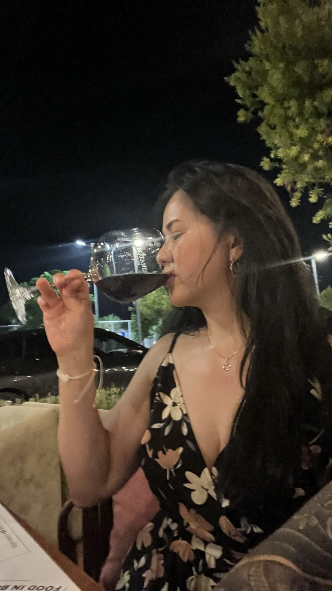

Olivia Orozco

Lingvägen 180, 12361 Farsta - e: olivia.79@outlook.com - +4731417293
Summary
Enthusiastic and adaptable professional with a solid commitment to driving data governance and quality. Adept at
fostering collaboration, implementing strategies, and ensuring compliance in dynamic environments. Experienced in
process optimization, technical leadership, and stakeholder engagement. Fluent in multiple languages, with a proven
track record of successful data stewardship.
Work Experience
Head of Support & Solution Specialist
Metodika AB [2020 - Current]
Ensuring customer satisfaction and offering comprehensive guidance and expertise to facilitate the ease of
their tasks.
Spearheaded strategic transformations to enhance productivity and employee satisfaction.
Streamlined team roles, processes, and workflows to ensure efficient operation.
Orchestrated major release and hotfix releases, ensuring seamless system updates.
Led daily stand-up meetings, retrospectives, and Kanban board management.
Navigated complex decision-making scenarios, maintaining stringent control.
Customer Relationship Manager & Production Team Leader/Logistic
Comforta AB
Orchestrated seamless order handling, meeting hotel requirements and expectations.
Efficiently planned daily production of 15 tons, ensuring on-time deliveries.
Supervised production resources and team coordination, optimizing efficiency.
Spearheaded logistic planning for geographically distributed deliveries.
Played a crucial role in implementing productivity and efficiency enhancements.
Actively participated in customer meetings and reporting processes.
Education
BSBA Management
New Era university, Philippnes
Business Administration Management
[1995 - 1997]
High Schoold
Out Lady of Mt. Carmel College, Philippnes
[1992 - 1995]
Elementary
Caingin Elementary School, Philippines
[1986 - 1992]
Competance and Training
Leadership Training [2014]
Better Working Environment Education [2014]
Project Management [2018]
Developmental Leadership Training [2019]
UX Designer [2024]
Web Designer/Developer [2024]
Skills
Stakeholder Engagement/Coordination
Process Optimization
Technical Leadership
Cross-functional Collaboration
Project Management
Quick Guides, Manual Documentation & Release Documentation
User Training
Hosting Seminars
T echnical Analysis (Financial & Trading)
UX Design
Web Design/Development
Languages
Swedeish (Fluent)
English (Flueny)
Tagalog (Moder Tongue)
Danish (Basic)
Norwegian (Basic)
German (Learning)
Personal Information
Civil Status: Widow
Swedish Driver's License: B
Location Preference
Stockholm
Remote
Hoby
Gaming
Grill
Work out